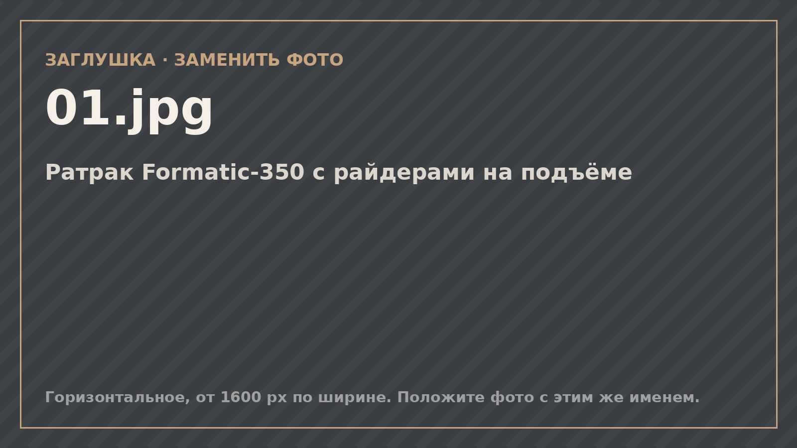
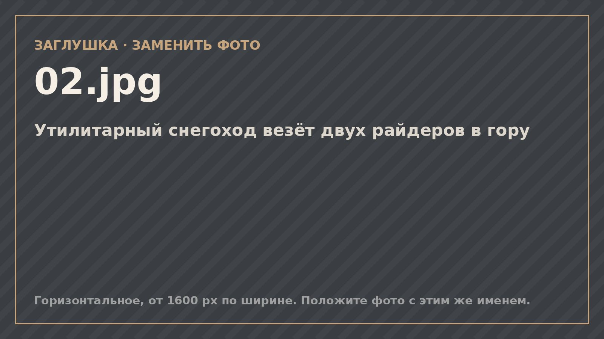
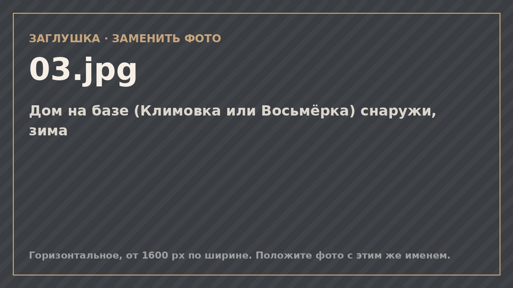
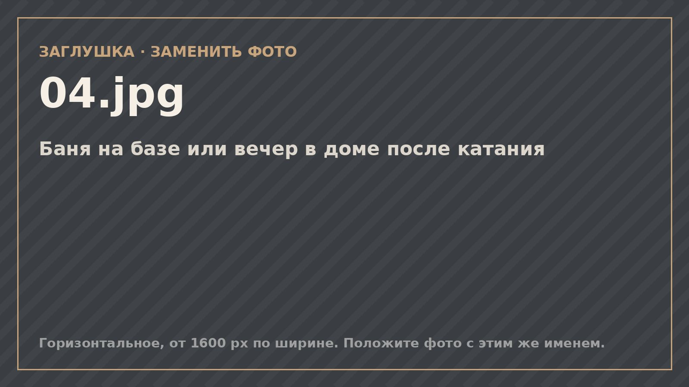

Most people who think of skiing in Kazakhstan think of Almaty. Ridder, a small mining town in the far east of the country, is a different trip: untracked snow on forested ridges of the Western Altai, reached by snowmobile or snowcat, with nobody else on the slope. This guide covers how freeride works here, what it costs and how to get there.
Where Ridder is
Ridder sits in the Western Altai in East Kazakhstan, close to the Russian border. The nearest airport is Ust-Kamenogorsk (Oskemen, UKK), 120 km away — about two hours by road. Domestic flights to Ust-Kamenogorsk run from Almaty and Astana, which have international connections.
Freeride here is organised from two bases outside town, Klimovka and Vosmyorka. You stay at the base and start riding from it.
Two ways up

Snowmobile drop-offs. A utility snowmobile takes two riders up at a time. Expect 8–10 runs a day in groups of up to 6. More runs and more varied lines.
Snowcat (cat skiing). A Formatic-350 snowcat carries the group up between runs. Expect 5–8 runs a day in groups of up to 10–12. Slower, but you rest in the cabin between runs.

The all-inclusive tour
Both formats are sold as a three-day tour: arrive on day one, ride on days two to four, leave on day five. The price includes:
- meals: breakfast, lunch box and dinner;
- accommodation: a bed in a house at the base;
- avalanche gear: probe, shovel and transceiver;
- a seat on the snowmobile or in the snowcat;
- a guide;
- banya (Russian sauna).
Prices per person for the whole tour:
Snowmobile tours run with 4 riders or more (up to 6). Snowcat tours run with 10 or more (up to 12–14). If your group is smaller, write to us and we will find an option.

A typical day
A sample schedule — times shift with weather and the type of drop-off:
- 08:00 — breakfast
- 09:00 — freeride, first session
- 12:00 — lunch
- 12:30 — freeride, second session
- 16:00 — back to the base
- 19:00 — dinner
On arrival day you check in around 13:30, meet the guide for a briefing at 18:00 and have dinner at 19:00. On the last day you leave the base at noon.

Getting there
Fly into Ust-Kamenogorsk via Almaty or Astana. We pick you up at the airport, drive you to the base and back at the end of the tour, and can book a night in Ridder or Ust-Kamenogorsk on either side. We write and speak in English.
Citizens of many countries can enter Kazakhstan visa-free for short stays. Rules change, so check the current requirements for your passport before you book flights.
What to bring
Bring your own skis or snowboard and clothing for full days in the cold: layers, a shell, two pairs of gloves, goggles. Avalanche gear is included in the tour.
Frequently asked questions
When is the freeride season in Ridder?
From mid-November to mid-April.
How much does a freeride tour in Kazakhstan cost?
Three riding days and four nights all-inclusive cost from 370,000 KZT per person (snowcat, Vosmyorka base) to 780,000 KZT (snowmobile, Klimovka base).
Is avalanche gear included?
Yes. A probe, shovel and transceiver are part of the tour price.
How do I get to Ridder?
Fly to Ust-Kamenogorsk (UKK) via Almaty or Astana. Ridder is about two hours by road; we arrange the transfer.
Can I book with fewer people?
Snowmobile tours need 4 riders and snowcat tours 10. If you have fewer, write to us — we will find an option.